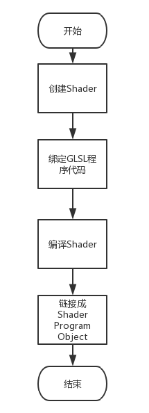

LearnOpengl_HelloTriangle
通过opengl绘制图形，需要通过opengl的渲染管线，这一过程实际上指的是一堆原始图形数据途经一个输送管道，期间经过各种变化处理最终出现在屏幕的过程。图形渲染管线可以被划分为两个主要部分：第一部分把你的3D坐标转换为2D坐标，第二部分是把2D坐标转变为实际的有颜色的像素。
对于利用opengl画出一个三角形，归纳为以下步骤
build and compile our shader program

- 在OpenGL的渲染管线中，我们必须要配置VS和FS(PS)两个着色器,可以选择配置GS。
//创建着色器的方式
/***
* 创建一个指定类型的着色器，返回指向这个着色器的在显存地址的引用
***/
int MyShader = glCreateShader(TYPE_OF_SHADER);
- 着色器程序运行的着色器语言，在opengl中使用的是GLSL。所以我们需要编写GLSL,并且将其绑定到我们创建的着色器上
/***
* MyShaderSource中写入待绑定的GLSL程序
***/
const char *MyShaderSource = "#version 330 core\n"
"out vec4 FragColor;\n"
"void main()\n"
"{\n"
" FragColor = vec4(1.0f, 0.5f, 0.2f, 1.0f);\n"
"}\n\0";
/***
* 将GLSL程序与Shader进行绑定
* Shader显存地址/程序数量/字符串(数组)/字符串数组长度
***/
glShaderSource(MyShader, 1, &MyShaderSource, NULL);
- 进行着色器编译并显示Debug信息
glCompileShader(vertexShader);
// check for shader compile errors
int success;
char infoLog[512];
glGetShaderiv(vertexShader, GL_COMPILE_STATUS, &success);
if (!success)
{
glGetShaderInfoLog(vertexShader, 512, NULL, infoLog);
std::cout << "ERROR::SHADER::VERTEX::COMPILATION_FAILED\n" << infoLog << std::endl;
}
- 到这里我们的着色器就编译好了，接下来我们需要将编译好的着色器链接成一个着色器对象。这个着色器对象就是我们将数据渲染到屏幕所使用的的渲染管线。
unsigned int shaderProgram;
shaderProgram = glCreateProgram();
glAttachShader(shaderProgram, vertexShader);
glAttachShader(shaderProgram, fragmentShader);
glLinkProgram(shaderProgram);
glGetProgramiv(shaderProgram, GL_LINK_STATUS, &success);
if(!success) {
glGetProgramInfoLog(shaderProgram, 512, NULL, infoLog);
std::cout << "ERROR::SHADER::PROGTRAM::LINK_FAILED\n" << infoLog << std::endl;
}
/***
* 在之后可以调用glUseProgram(shaderProgram)来使用这个我们已经链接好的着色器程序对象。
***/
//别忘了垃圾回收，这两个这时候已经没用了
glDeleteShader(vertexShader);
glDeleteShader(fragmentShader);
set up vertex data (and buffer(s)) and configure vertex attributes
- 我们要画图形的话，需要几样的东西，首先是需要在内存中准备顶点，然后传输到显存中。
VBO(vertex buffer objects):顶点缓冲对象
unsigned int VBO;
//这里用&，是因为直接改变VBO指向内存单元的数据，执行完后VBO保存一个显存地址
glGenBuffers(1, &VBO);
//这一步将显存地址与GL_ARRAY_BUFFER绑定，这样之后所有对GL_ARRAY_BUFFER，其实就是在操作VBO所指的显存区域。
glBindBuffer(GL_ARRAY_BUFFER, VBO);
//这一步是用于将内存中的数据传输到显存中
glBufferData(GL_ARRAY_BUFFER, sizeof(vertices), vertices, GL_STATIC_DRAW);
- 上述代码用于创建一个叫做VBO缓冲对象的东西，这个用于存储将来从内存传输过来的定点数据。
解释显存中的缓存数据
- 在显存中的数据，我们必须手动指定输入数据的哪一个部分对应顶点着色器的哪一个顶点属性。
//该函数用于让OpenGL知道该如何解析顶点数据
//第一个参数表示该数据希望传输到VS的哪一个参数。比如
// layout (location = 0) in vec3 aPos;
// layout (location = 1) in vec3 bPos;
//第一个参数设为0则该数据传入aPos,1则传入bPos
//第二个参数表示该定点属性的大小，这里是3
//第三个参数表示大小为3，每个部分的类型为float
//第四个参数表示是否要标准化设备坐标(Normalized Device Coordinates, NDC)
//第五个参数表示每个顶点属性的总大小,对于紧密排列的数据可以用0代替
//第六感参数表示位置数据在缓冲中起始位置的偏移量(Offset)，比如sizeof(float)，则偏移一个float值，3*sizeof(float)，则偏移一个定点
glVertexAttribPointer(0, 3, GL_FLOAT, GL_FALSE, 3 * sizeof(float), (void*)0);
- 接下来我们应该使用glEnableVertexAttribArray，以顶点属性位置值作为参数，启用顶点属性；顶点属性默认是禁用的。
glEnableVertexAttribArray(0);
VAO(Vertex Array Objec):顶点数组对象
- 一个顶点数组对象会储存以下这些内容：
glEnableVertexAttribArray和glDisableVertexAttribArray的调用。
通过glVertexAttribPointer设置的顶点属性配置。
通过glVertexAttribPointer调用与顶点属性关联的顶点缓冲对象。
- 顶点数组对象(Vertex Array Object, VAO)可以像顶点缓冲对象那样被绑定，任何随后的顶点属性调用都会储存在这个VAO中。
- 也就是说我们对VBO的所有配置都会保存在我们所绑定的VAO中，如果之后想要使用这一配置，只需要重新绑定它就行了。
//VAO绑定
unsigned int VAO;
glGenVertexArrays(1, &VAO);
glBindVertexArray(VAO);
//VAO解绑
glBindVertexArray(VAO);
//VAO使用
glBindVertexArray(VAO);
小结
// ..:: Initialization code (done once (unless your object frequently changes)) :: ..
// 1. bind Vertex Array Object
glBindVertexArray(VAO);
// 2. copy our vertices array in a buffer for OpenGL to use
glBindBuffer(GL_ARRAY_BUFFER, VBO);
glBufferData(GL_ARRAY_BUFFER, sizeof(vertices), vertices, GL_STATIC_DRAW);
// 3. then set our vertex attributes pointers
glVertexAttribPointer(0, 3, GL_FLOAT, GL_FALSE, 3 * sizeof(float), (void*)0);
glEnableVertexAttribArray(0);
//glBindVertexArray(0);
...
// ..:: Drawing code (in render loop) ::..
// 4. draw the object
glUseProgram(shaderProgram);
glBindVertexArray(VAO);
someOpenGLFunctionThatDrawsOurTriangle();
render loop
- 如何使用我们所自定义的着色器和配置好的定点属性呢?
// draw our first triangle
glUseProgram(shaderProgram);
glBindVertexArray(VAO); // seeing as we only have a single VAO there's no need to bind it every time, but we'll do so to keep things a bit more organized
glDrawArrays(GL_TRIANGLES, 0, 3);
// glBindVertexArray(0); // no need to unbind it every time
- 在glUseProgram函数调用之后，每个着色器调用和渲染调用都会使用这个程序对象
- 在glBindVertexArray函数调用之后，会使用VAO中所保存的顶点数据配置
- glDrawArray函数用于绘制图元，第一个函数是图元类型，第二个参数指定了顶点数组的起始索引，第三是顶点个数。绘制glVertexAttribPointer绑定后的第几个位置开始的几个定点。注意这里是定点的偏移，比如这里上下文中大小为 3*sizeof(float)
- 需要区分在glVertexAttribPointer中的offset和这里的索引
EBO(Element Buffer Object):引缓冲对象
- 用于指定定点的绘制顺序
unsigned int EBO;
glGenBuffers(1, &EBO);
glBindBuffer(GL_ELEMENT_ARRAY_BUFFER, EBO);
glBufferData(GL_ELEMENT_ARRAY_BUFFER, sizeof(Indices), Indices, GL_STATIC_DRAW);
//这里改用这glDrawElements来画三角形
glDrawElements(GL_TRIANGLES, 6, GL_UNSIGNED_INT, 0);
- 注意VAO也会保存EBO的数组配置信息，glDrawElements会使用我们绑定的EBO中的索引顺序,所以要注意解绑VAO的顺序
绘制最终流程
// ..:: 初始化代码 :: ..
// 1. 绑定顶点数组对象
glBindVertexArray(VAO);
// 2. 把我们的顶点数组复制到一个顶点缓冲中，供OpenGL使用
glBindBuffer(GL_ARRAY_BUFFER, VBO);
glBufferData(GL_ARRAY_BUFFER, sizeof(vertices), vertices, GL_STATIC_DRAW);
// 3. 复制我们的索引数组到一个索引缓冲中，供OpenGL使用
glBindBuffer(GL_ELEMENT_ARRAY_BUFFER, EBO);
glBufferData(GL_ELEMENT_ARRAY_BUFFER, sizeof(indices), indices, GL_STATIC_DRAW);
// 4. 设定顶点属性指针
glVertexAttribPointer(0, 3, GL_FLOAT, GL_FALSE, 3 * sizeof(float), (void*)0);
glEnableVertexAttribArray(0);
// ..:: 绘制代码（渲染循环中） :: ..
glUseProgram(shaderProgram);
glBindVertexArray(VAO);
glDrawElements(GL_TRIANGLES, 6, GL_UNSIGNED_INT, 0)
glBindVertexArray(0);
文章标题:LearnOpengl_HelloTriangle
本文作者:Sanctorum003
发布时间:2019-10-08, 18:33:36
最后更新:2019-11-08, 15:17:20
原始链接:https://sanctorum.github.io/2019/10/08/LearnOpengl-HelloTriangle/版权声明: "署名-非商用-相同方式共享 4.0" 转载请保留原文链接及作者。